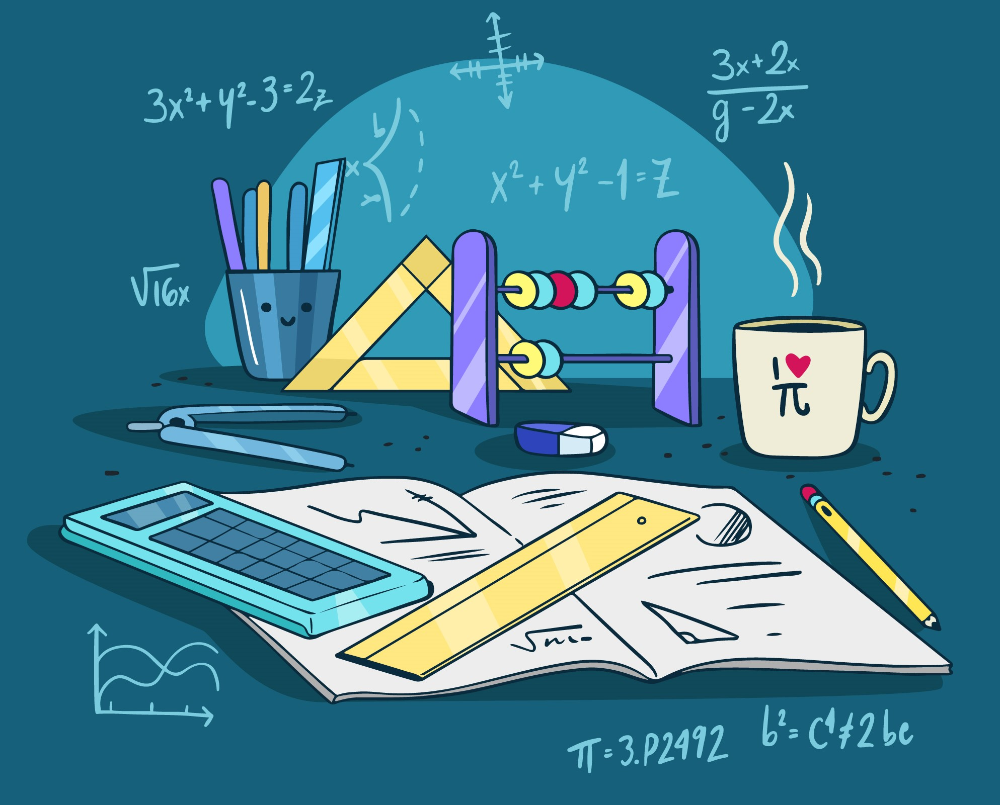
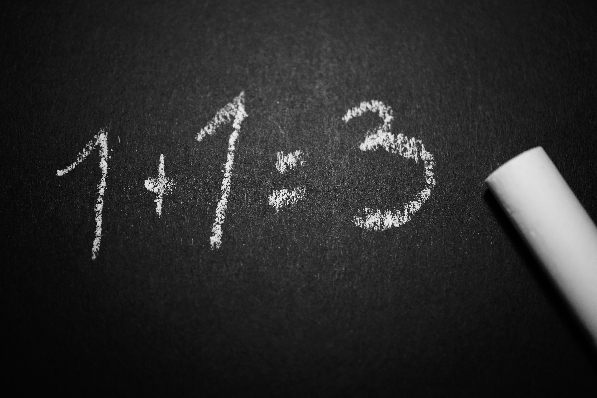
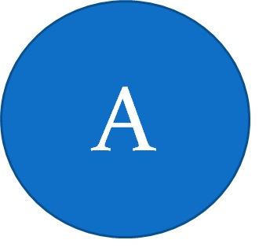
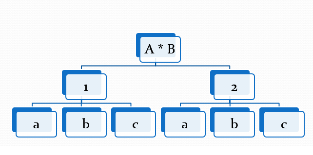

La matemática discreta estudia una serie de estructuras como algoritmos, grafos y teoría de números, que son el fundamento de las ciencias de la computación.
Más que una rama de la matemática, la matemática discreta engloba a un conjunto de áreas que se dedican al estudio de estructuras matemáticas “discretas” en vez de “continuas”.
Pensemos que en que el cálculo infinitesimal se trabaja sobre los números reales, mientras que la matemática discreta descansa sobre la base de los números naturales.
La matemática discreta estudia las estructuras cuyos elementos pueden contarse uno por uno separadamente, como los números enteros, grafos y sentencias lógicas, que son aplicados en diferentes campos de la ciencia, principalmente en las ciencias de la computación.
Son fundamentales para la ciencia de la computación, porque solo son computables las funciones de conjuntos numerables. La clave en matemáticas discretas es que no es posible manejar las ideas de proximidad o límite y suavidad en las curvas, como se puede en el análisis. Por ejemplo, en matemáticas discretas una incógnita puede ser 2 o 3, pero nunca se aproximará a 3 por la izquierda con 2.9, 2.99, 2.999, etc. Las gráficas en matemáticas discretas vienen dadas por un conjunto finito de puntos que se pueden contar por separado; es decir, sus variables son discretas o digitales, mientras que las gráficas en cálculo son trazos continuos de rectas o curvas; es decir, sus variables son continuas o analógicas.
Adicion y Multiplicación
Principio del Conteo
El principio fundamental de conteo establece que el número de posibilidades en que múltiples eventos pueden ocurrir se pueden determinar al multiplicar el número de resultados posibles por cada evento.
Contamos con dos principios estos son: Suma y Multiplicación
Regla de la suma
Principio de la suma o adición: Supongamos que un evento E puede ocurrir en m formas y un segundo evento F puede ocurrir en n formas, y supongamos que ambos eventos no pueden ocurrir en forma simultánea (disjuntos o mutuamente excluyentes).
Entonces E o F pueden ocurrir de m+n formas.

Regla Generalizada de la suma
Formula: n1+n2+...+nk
Reglad de la multiplicación
Supongamos que un evento E puede ocurrir en m formas e independientemente de este evento, un evento F puede ocurrir en n formas.
Entonces las combinaciones de los eventos E y F pueden ocurrir en mn formas.
Regla Generalizada de la multiplicación
Formula: m*n
Permutaciones y combinaciones
¿Nos importa el orden?
Si el orden no importa entonces es una combinación
Si el orden si importa entoces si es una permutación
Tenemos dos tipos de permutaciones
Con repetición
Sin repeteción
Permutaciones con repeteción
Son las más fáciles de calcular. Si tienes n cosas para elegir y eliges r de ellas, las permutaciones posibles son:
n × n × ... (r veces) = n^r
Porque hay n posibilidades para la primera elección, DESPUÉS hay n posibilidades para la segunda elección, y así hasta llegar a la ultima posición.
Permutaciones sin repeteción
Acá se reducen nuestras opciones en los pasos a seguir
Función factorial
!: Quiere decir mutliplicar los numeros descendientes:
Ejemplo: 5! = 5*4*3*2*1=120
¿Y si no deseo los elementos?
Usamos la siguiente formula:
n!/(n-r)!
Combinaciones
Una combinación es un arreglo de elementos en donde el orden no importa.
Sin repetición: Si cada elemento puede aparecer como mucho una vez
Con repetición. En cambio si no hay esta restricción
Formula: Combinaciones sin Repetición
n!/r!(n-r)!
Formula: Combinaciones con repeteción
(n+r-1)!/r!(n-1)!
Teoría de Conjuntos
Conjunto
Un conjunto es una colección o clase de objetos bien definidos.
Estos objetos se llaman elementos o miembros del conjunto.
Notación de Conjuntos
Los conjuntos se denotan con las letras mayusculas de nuestro alfabeto (A, B, C, D, ..., X, Y, Z)
Algunas veces con letras de alfabeto griego. Los elementos simplemente se escriben dentro de llaves, separado por comas.
Determinación de Conjuntos
La determinación de un conjunto corresponde a la manera como éste puede expresarse.
Para determinar un conjunto se utilizan dos formas:
Determinación por extensión
Determinación por comprensión
Determinación por Extensión
Un conjunto se determina por extensión cuando se enumeran o se nombran los elementos del conjunto. Cuando el conjunto es finito se escriben entre llaves, separados por comas. Cuando el conjunto es infinito se escriben entre llaves algunos elementos y se ponen puntos suspensivos.
D={1, 2, 3, 4, 5, 6, 7, 8, 9…}
E={1, 2, 3, 5, 7, 11, 13, 17, 19}
Determinación de Conjuntos por Comprensión
Un conjunto se determina por comprensión enunciando la propiedad o cualidad que distingue a los elementos.
Para tal fin se utiliza lo siguiente:
{x/x cumple la propiedad},
Relación de Conjuntos
Pertenencia: x∈A↔️Ax Si x no es el elemnto de A o x no está en A, es decir, ¬(x∈A) se simboliza x∈A↔️¬Ax
Inclusión: Dados dos conjuntos A y B, esta relacion se utiliza para indicar que el conjunto A es sunbconjunto del conjunto B, lo cual se escribe: A ⊂ B
Igualdad: La ilgualdad de dos conjuntos A y B denota A=B
Operaciones de Conjuntos
Intersección
Unión
Diferencia
Diferencia Simétrica
Intersección de Conjuntos
La intersección de dos conjuntos A y B es el conjunto formado por todos los elementos comunes de ambos conjuntos (sin repetir elementos), es decir, es el conjunto formado por todos los elementos repetidos
Notación: A∩B A∩B={x/ x∈A ^ x∈B}
Unión de Conjuntos
La unión de dos conjuntos A y B es el conjunto formado por todos los elementos comunes y no comunes de ambos conjuntos (sin repetir elementos)
Notación: A∩B A∩B={x/ x∈A ˅ x∈B}
Diferencia de Conjuntos
La diferencia entre de dos conjuntos A y B es el conjunto formado por todos los elementos no comunes del conjunto B respecto al conjunto A; es decir, los elementos que están en A, pero no están en B
Notación: A-B
Diferencia Simetrica
La diferencia simétrica entre de dos conjuntos A y B es el conjunto formado por todos los elementos no comunes de ambos conjuntos; es decir, los elementos que no están repetidos entre los conjuntos
Notación: A+B
Diagramas de Venn
Se pueden definir como círculos que se superponen u otras figuras para ilustrar las relaciones lógicas entre dos o más conjuntos de elementos. A menudo, se utilizan para organizar cosas de forma gráfica, destacando en qué se parecen y difieren los elementos. Los diagramas de Venn, también denominados "diagramas de conjunto" o "diagramas lógicos", se usan ampliamente en las áreas de matemática, estadística, lógica, enseñanza, lingüística, informática y negocios.
Operaciones con Conjuntos
Conjuton

Union
Intersección
Diferencia
Diferencia Simétrica
Producto Cartesiano
El producto cartesiano de un conjunto A y de un conjunto B es el conjunto constituido por la totalidad de los pares ordenados que tienen un primer componente en A y un segundo componente en B.
Forma Matricial
Forma Sagital
Diagrama del Árbol

Inducción Matemática
Inducción Matemática
La inducción matemática es un método de demostración que se utiliza cuando se trata de establecer la veracidad de una lista infinita de proposiciones.
El método es bastante natural para usarse en una variedad de situaciones en la ciencia de la computación.
Los números naturales se definen de manera inductiva. Es decir, incluso hablando muy informalmente, al describir los números naturales no podemos nombrar a todos los números naturales puesto que son infinitos, lo que hacemos normalmente es decir algo como “1 es un número natural, también 2 y 3 y 4 y así te sigues, si le sumas 1 a un número natural te da otro número natural”.
Base inducción Matemática
a. 1 es un número natural.
b. si n es un número natural, entonces n+1 también es número narutal.
El principio de inducción es usar esta definición para probar cosas. Podemos definirlo de varias maneras:
I. Si A es un subconjunto de los números naturales tal que:
a. 1 pertenece a A
b. si n pertenece a A, entones n + 1 pertenece a A
Entonces A contiene todos los naturales.
II. Si una propiedad P de un subconjunto de los números naturales cumple que:
a. P es cierta para 1 y
b. si P es cierta para n, entonces P es cierta para n + 1.
Entonces P es cierta ara todos los naturales.
Analogía de los Dominós
Si ponemos todos nuestros dominós parados en una fila, necesitamos sólo asegurarnos de dos cosas para que se caigan:
a) Que exista al menos un dominó que se caiga.
b) Que si un dominó cae, empuja al siguiente.
Para la primera parte, no tiene que ser el primer dominó. Si tiramos el primero, queremos que se caigan todos; pero si tiramos el segundo o el tercero o el quinto, queremos que se caigan todos después el que tiramos.
Para la segunda parte tenemos que asegurarnos que la distancia entre cada dos dominós no sea demasiada o que estén en el ángulo correcto, porque si uno solo no empuja al que sigue, entonces no se van a caer todos.
Los números naturales son como un conjunto infinito pero ordenado de dominós, donde cada dominó tiene escrito un número. Las pruebas por inducción son como ordenar nuestros dominós parados en una fila y ver si es posible empujar alguno para que se caigan todos.
a) El caso base es asegurarse de que exista un primer dominó que se caiga.
b) El paso inductivo es suponer que si cumple para algún entero, cumple para el siguiente. Como sabemos que cumple para el caso base, entonces cumple para el siguiente; como cumple para el siguiente, cumple a su vez para su siguiente y así sucesivamente cumplen todos los enteros a partir del caso base.
Esos dos pasos nos aseguran que se caen todos los dominós sin necesidad de verlos caer.
MCD
Número primos
Se dice que todo número natural mayor que uno (n ∈ N, n > 1) es un número primo, si sus únicos divisores en el conjunto de los números naturales (N) son 1 y “n”. De este modo se dice también que todo número no primo es un número compuesto.
Teorema Fundamental de la Aritmética
Todo número entero mayor que uno (n ∈ Z, n > 1), se descompone, como producto de números primos, de manera única salvo el orden de los factores.
Teorema de la División
Dados enteros a, b con b diferente a 0, existen enteros q y r tales que
a = b q + r y 0 <= r < |b|
- Al número a se le llama dividendo.
- Al número b se le llama divisor.
- Al número q se le llama cociente.
- Al número r se le llama residuo.
Si queremos hallar el resultado de dividir 19 entre 5 tenemos: 19=5x3+4, es decir, que el cociente es 3 y el residuo 4. Se puede observar que el residuo 4 es mayor que 0 y menor que 5 que es el divisor.
a = 19,
b = 5,
q = 3,
r = 4
Si queremos hallar el resultado de dividir 23 entre 7 tenemos: 23=7x3+2, lo que quiere decir que el cociente es 3 y el residuo es 2.
a = 23,
b = 7,
q = 3,
r = 2
Divisibilidad
Si x, b ∈ Z,
x divide a b , x⎥ b,
si ∃c∈Z tal que b=x·c.
Se dice también que b es múltiplo de x o que x es divisor de b. En caso contrario, x∤b, x no divide a b.
Máximo Común Divisor
Dados dos números enteros positivos su máximo común divisor no es más que el mayor de los divisores comunes de ambos números
El Algoritmo de Euclides
Euclides observó la división entera de dos números a, b, con a>b. La división entre a y b -razonaba Euclides- es una relación entre dos enteros a y b como sigue:
a=b·c+r
Y en consecuencia:
m.c.d.(a, b)=m.c.d.(b, r)
¿Para que nos servirá?
El famoso algoritmo de Bresenham para dibujar rectas digitales en la pantalla es, en esencia, el algoritmo de Euclides.
Es una pieza esencial en los sistemas de cifrado basados en números primos tales como el RSA. Ello es debido a que permite calcular los inversos modulares con facilidad.
En informática, las cadenas euclídeas se generan a partir de una versión modificada del algoritmo de Euclides.
Teoría de grafos
Grafos
En matemáticas y en ciencias de la computación, la teoría de grafos estudia las propiedades de los grafos.
Un grafo es un conjunto, no vacío, de objetos llamados vértices (o nodos) y una selección de pares de vértices, llamados aristas (edges en inglés) que pueden ser orientados o no.
Típicamente, un grafo se representa mediante una serie de puntos (los vértices) conectados por líneas (las aristas).
Complementos del grafo
Lazos en grafos
Aristas Paralelas
Vertices adyacentes
Tipos de Grafos
Un grafo dirigido o grafo orientado, es un tipo de grafo en el cual el conjunto de las aristas tiene una dirección definida, a diferencia del grafo generalizado, en el cual la dirección puede estar especificada o no.
¿Que es un grafo simple?
Grafo simple o simplemente grafo es aquel que acepta una sola una arista uniendo dos vértices cualesquiera. Esto es equivalente a decir que una arista cualquiera es la única que une dos vértices específicos. Es la definición estándar de un grafo. No contiene aristas paralelas, lazos ni aristas dirigidos.
Un grafo se dice conexo si, para cualquier par de vértices a y b en G, existe al menos una trayectoria (una sucesión de vértices adyacentes que no repita vértices) de a a b.
Matriz de adyacencia
Una de las maneras más fáciles de implementar un grafo es usar una matriz bidimensional. En esta implementación de matriz, cada una de las filas y columnas representa un vértice en el grafo. El valor que se almacena en la celda en la intersección de la fila X y la columna Y indica si hay una arista desde el vértice X al vértice Y.
Subgrafos
Un subgrafo es un grafo que esta contenido dentro de otro grafo y que se obtiene eliminando algunas aristas y vértices del grafo principal
Grafos isomorfos
Dos grafos son isomorfos cuando existe una correspondencia biunívoca (uno a uno), entre sus vértices de tal forma que dos de estos quedan unidos por una arista en común.
Dos grafos son isomorfos cuando existe una correspondencia biunívoca (uno a uno), entre sus vértices de tal forma que dos de estos quedan unidos por una arista en común.
Teoría de grafos II
Grado de vertice
El grado de un vértice se puede definir como la cantidad de aristas que parten desde o hacia un mismo vértice
Rutas y Circuitos de Euler
Ruta de euler
Ruta de Euler: Una ruta o camino de Euler es una trayectoria que contiene todas las aristas del grafo y recorre una arista exactamente una vez
Condiciones:
El Grafo debe de ser conexo
Exactamente 2 vértices son de grado impar, todos los demás deben de ser de grado par
Se comienza en uno de los vértices de grado impar y se termina en el otro vértice impar
Circuito de eulers
Un circuito de Euler es un Camino de Euler con la diferencia que empieza y termina en el mismo vertice es decir es un camino cerrado que recorre cada arista exactamente una vez
Condiciones:
El grafo es conexo
Todos los vértices son de grado par
Se comienza y se termina en el mismo vertice
Caminos y Caminos Hamiltonianos
Un camino hamiltoniano, en el campo matemático de la teoría de grafos, es un camino de un grafo, una sucesión de aristas adyacentes, que visita todos los vértices del grafo una sola vez. Si además el último vértice visitado es adyacente al primero, el camino es un ciclo hamiltoniano.
Coloración de grafos
En Teoría de grafos, la coloración de grafos es un caso especial de etiquetado de grafos; es una asignación de etiquetas llamadas colores a elementos del grafo. De manera simple, una coloración de los vértices de un grafo tal que ningún vértice adyacente comparta el mismo color es llamado vértice coloración.
Arbol de direcciones
Desde el punto de vista conceptual, un árbol es un caso particular de grafo, es un objeto que comienza con una raíz y se extiende en ramificaciones o lineas que terminan en un nodo.
Representan la estructura no-lineal y dinámica de datos más importante en computación. Dinámica porque puede cambiar durante la ejecución de un programa y no-lineal porque a cada elemento del árbol pueden seguirle varios elementos.
Es un conjunto de nodos y líneas. Un nodo es un elemento de información que reside en un árbol. Una línea es un par de nodos ordenados, , y a la secuencia de lineas se le llama ruta (path).
Un árbol es una estructura jerárquica aplicada a un conjunto de elementos llamados nodos, uno de los cuales es conocido como raíz. Además, se crea una relación o parentesco entre los nodos que da lugar a términos como padre, hijo, hermano, antecesor, sucesor, ancestro.
En ciencias de la computación, un árbol es una estructura de datos comúnmente usada, que emula la estructura de un árbol con un conjunto de nodos conectados.
Cada uno de los nodos de un árbol tiene cero o más nodos hijos, que están por debajo de él (en ciencias de la computación, al contrario que en la naturaleza, los árboles crecen hacia abajo, no hacia arriba).
El nodo del cual otro es hijo, es llamado su nodo padre.
Un hijo tiene como máximo un padre; un nodo sin padre es llamado nodo raíz (o simplemente raíz).
Los nodos sin hijos son llamados hojas
Propiedades
Tiene un nodo al que se le llama "nodo raíz" o raíz del árbol, éste no tiene "padre".
Todos los nodos tienen una sola línea de entrada, excepto el nodo raíz, éste no tiene línea de entrada.
Existe una "única" ruta del nodo raíz a todos los demás nodos del árbol.
Si existe una ruta , entonces "b" es el "hijo" de "a" y es el nodo raíz de un sub-árbol.
Todos los nodos que son descendientes de un mismo nodo "padre", son "hermanos".
Todo nodo que no tiene ramificaciones (hijos), es un nodo "terminal" u "hoja".
Todo nodo que no es raíz ni terminal es un nodo "interior".
"Grado" es el número de descendientes directos de un determinado nodo.
"Grado del árbol" es el máximo grado de todos los nodos del árbol.
"Nivel" es el número de ramificaciones que se deben recorrer para llegar a un determinado nodo. El nodo raíz tiene nivel 1.
"Altura del árbol" es el máximo número de niveles de todos los nodos del árbol.
Longitud de un arbol
Es el número de arcos que deben ser recorridos desde la raíz hasta el nodo X.
Cuando hablamos de longitud de un árbol, debemos diferenciar los siguientes conceptos:
Longitud de camino.
Longitud de camino interno
Longitud de camino externo.
Longitud de camino
Se define la longitud de camino X como el número de arcos que deben ser recorridos para llegar, desde la raíz, al nodo X.
Por definición, la raíz tiene longitud de camino 1, sus descendientes directos tienen longitud de camino 2 y así sucesivamente.
Longitud de camino interno
Es la suma de las longitudes de camino de todos los nodos del árbol.
En donde i = nivel del árbol, h = altura del árbol, ni = número de nodos en el nivel "i".
Media de Longitud de camino interno
Es el número de arcos que deben ser recorridos en promedio para llegar de la raíz a un nodo cualquiera del árbol.
En donde LCI = longitud de camino interno y "n" = número de nodos del árbol.
Longitud de camino externo
Árbol extendido: es aquel en el que el número de hijos de cada nodo es igual al grado del árbol.Para que se cumpla esta condición si es necesario se le agregan nodos especiales al árbol, tantos como sea necesario para que se cumpla la condición.
Nodos especiales: su objetivo es reemplazar las ramas vacías o nulas y no pueden tener descendientes.
>
La longitud de camino externo LCE es la suma de las longitudes de camino de todos los nodos especiales de un árbol.
En donde "h" = altura del árbol, "i" = nivel del árbol y "nei" = número de nodos especiales en el nivel "i".
Media de longitud de camino externo
Es el número de arcos que deben ser recorridos en promedio desde la raíz hasta un nodo especial cualquiera del árbol.
En donde LCE = longitud de camino externo y "ne" = número de nodos especiales.
Recorrido de arboles II
Arbol binario
Un árbol binario es un tipo de árbol en que cada vértice máximo puede tener dos hijos; su nodo raíz está enlazado a dos subárboles binarios disjuntos denominados subárbol izquierdo y subárbol derecho. Los árboles binarios no son vacíos ya que como mínimo tienen el nodo raíz.
Arbol Binario LLeno
Es aquel árbol en el que los nodos de cada nivel tienen sus dos hijos o ninguno (si es hoja).
Arbol Binario Completo
Es aquel árbol binario lleno en que todas sus hojas están en el nivel n o n-1 considerando que para un hijo derecho hay siempre un hijo izquierdo. Por lo tanto, todo árbol binario lleno es completo, pero no la viceversa.
Propiedades de los arboles binarios
Recorrido de un arbol binario
Un recorrido en un árbol binario es Una operación que consiste en visitar todos sus vértices o nodos, de tal manera que cada vértice se visite una sola vez.�Se distinguen tres tipos de recorrido: INORDEN, POSORDEN Y PREORDEN.
En cada recorrido se tiene en cuenta la posición de la raíz (de ahí su nombre) y que siempre se debe ejecutar primero el hijo izquierdo y luego el derecho.
Recorrido de preorden
Preorden: (raíz, izquierdo, derecho). Para recorrer un árbol binario no vacío en preorden, hay que realizar las siguientes operaciones recursivamente en cada nodo, comenzando con el nodo de raíz:
Visite la raíz
Atraviese el sub-árbol izquierdo
Atraviese el sub-árbol derecho
Recorrido de inorde
Inorden: (izquierdo, raíz, derecho). Para recorrer un árbol binario no vacío en inorden (simétrico), hay que realizar las siguientes operaciones recursivamente en cada nodo:
1. Atraviese el sub-árbol izquierdo
2. Visite la raíz
3. Atraviese el sub-árbol derecho
Recorrido de postorden
Postorden: (izquierdo, derecho, raíz). Para recorrer un árbol binario no vacío en postorden, hay que realizar las siguientes operaciones recursivamente en cada nodo:
1. Atraviese el sub-árbol izquierdo
2. Atraviese el sub-árbol derecho
3. Visite la raíz
Arbol Binario de busqueda
Un árbol binario de búsqueda es aquel que tiene sus nodos con un orden definido, de tal manera que los datos del subárbol izquierdo son menores y los del subárbol derecho son mayores.
Estos árboles tienen como particularidad la permisión de que se puedan realizar búsquedas de nodos o datos determinados, utilizando el método de búsqueda binaria de manera similar al usado en arreglos.
Para crear un árbol binario de búsqueda a partir un listado de datos, asuma que el primer dato es la raíz del árbol; los demás se ubican en el árbol así: los menores como hijos izquierdos y los mayores como hijos derechos.
Algebra Vectorial
Cantidades escalares y vecotoriales
Cantidad Escalar:
Esta especificada por un valor con la unidad apropiada
Ejemplo: Temperatura, Masa, Volumen, Tiempo
Estas cantidades pueden tener valores positivos, negativos o tener un valor cero
Sus operaciones matemáticas se realizan utilizando las reglas de la aritmética
Cantidad Vectorial
Son aquellas que quedan totalmente definidas con un módulo, una dirección y un sentido.
Es el caso de la fuerza, la velocidad, el desplazamiento. En estas magnitudes es necesario especificar hacia dónde se dirigen y, en algunos casos dónde se encuentran aplicadas.
Todas las magnitudes vectoriales se representan gráficamente mediante vectores, que se simbolizan a través de una flecha.
Vector
Un vector tiene tres características esenciales: módulo, dirección y sentido.
Los vectores se representan goemétricamente con flechas y se le asigna por lo general una letra que en su parte superior lleva una pequeña flecha
Modulo
está representado por el tamaño del vector, y hace referencia a la intensidad de la magnitud ( número). Se denota con la letra solamente A o |A|
Dirección
Corresponde a la inclinación de la recta, y representa al ángulo entre ella y un eje horizontal imaginario. También se pueden utilizar los ejes de coordenadas cartesianas (x, y, z) como también los puntos cardinales para la dirección.
Sentido
Está indicado por la punta de la flecha. (signo positivo que por lo general no se coloca, o un signo negativo).
Sistema de coordenadas cartesianas
Operaciones Geometricas con vectores
Suma de Vectores: Al sumar dos vectores se obtiene otro vector (vector suma o resultante). Para obtener el vector suma es necesario recurrir a lo que se conoce como “regla del paralelogramo”. Esto es, se construye un paralelogramo que tenga los vectores como lados y se traza la diagonal del mismo para obtener el vector suma.
Para la resta se procede de la misma forma que la suma, pero el vector que resta se debe dibujar con sentido contrario, o sea el signo negativo cambia el sentido del vector. Luego el vector resultante es el que va desde el punto inicial del primer vector, hasta el final del vector que se le cambio el sentido.
Multiplicación de un escalar por un vector: Unicamente multiplicamos el escalar por los puntos del vector:
2*(3,-4) = (6,-8): Nos da como resultado otro vector
Probabilidad
La probabilidad es el cálculo matemático que evalúa las posibilidades que existen de que una cosa suceda cuando interviene el azar.
Eventos
Un evento se entiende como el acontecimiento de un hecho en proceso o por venir.
Se dice que es aleatorio, si no es posible determinarlo con exactitud. En todo caso, será posible predecirlo con un nivel dado de confianza.
Al evento también se le denomina un suceso o un fenómeno. Generalmente, se simula el evento por un conjunto de variables relacionadas entre si. Por lo tanto, un evento está representado con una o más variables vinculadas entre ellas.
Espacio Muestral
En la teoría de probabilidades, el espacio muestral o espacio de muestreo (denotado E, S, Ω o U) consiste en el conjunto de todos los posibles resultados individuales de un experimento aleatorio.
Por ejemplo, si el experimento consiste en lanzar dos monedas, el espacio de muestreo es el conjunto {(cara, cara), (cara, escudo), (escudo, cara) y (escudo, escudo)}.
Un evento o suceso es cualquier subconjunto del espacio muestral, llamándose a los sucesos que contengan un único elemento sucesos elementales. En el ejemplo, el suceso "sacar cara en el primer lanzamiento", o {(cara, cara), (cara, escudo)}, estaría formado por los sucesos elementales {(cara, cara)} y {(cara, esucdo)}.
Espacio muestral discreto
Podemos diferenciar entre dos tipos de espacios muestrales: discretos y continuos
Espacio Muestral Discreto: Son aquellos espacios donde el número de sucesos elementales es finito o infinito numerable.
Probabilidad condicional
Si tenemos dos eventos, A y B, la probabilidad condicional de que ocurra el evento A, dado que ha ocurrido el evento B, se representa como P(A|B), y se calcula de la siguiente manera:
Ejemplo